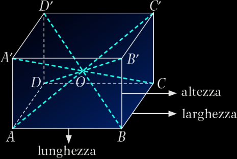
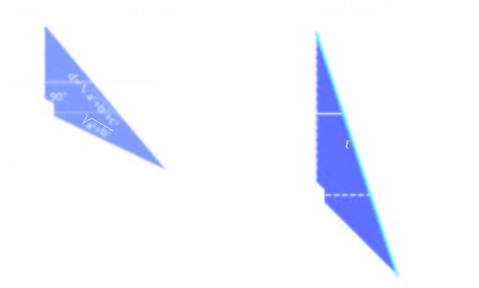

Prisma
Il prisma è un poliedro limitato da due poligoni congruenti disposti su piani paralleli e da tanti parallelogrammi quanti sono i lati di ciascuno dei due poligoni:
i due poligoni congruenti sono detti basi del prisma e i loro lati spigoli di base;
i parallelogrammi prendono il nome di facce laterali del prisma, i loro lati sono detti spigoli laterali e sono fra loro paralleli e congruenti.
Se gli spigoli laterali non sono perpendicolari alla base il prisma si dice obliquo. La distanza HHʹ tra i due piani paralleli su cui giacciono le basi è l’altezza.
L’insieme di tutte le facce laterali è detta superficie laterale del prisma. L’insieme delle facce laterali e delle due basi costituisce la superficie totale.
Un prisma si dice retto se gli spigoli laterali sono perpendicolari alle basi.
Un prisma si dice regolare se è retto e ha per basi due poligoni regolari.
Parallelepipedo
Un prisma avente per base due parallelogrammi prende il nome di parallelepipedo. Il parallelepipedo è limitato da sei parallelogrammi a due a due congruenti e situati su piani
paralleli.
Le quattro diagonali si bisecano, cioè si incontrano in un punto O che è il punto medio di ciascuna:
AO = OCʹ BO = ODʹ CO = OA’ DO = OB’
Un parallelepipedo retto avente per base due rettangoli si dice parallelepipedo rettangolo.
Il parallelepipedo rettangolo è limitato da sei rettangoli congruenti a due a due e situati su piani paralleli.
Le quattro diagonali sono congruenti fra loro e si bisecano:
AO = OCʹ = BO = ODʹ = CO = OAʹ = DO = OBʹ
I tre spigoli che escono da uno stesso vertice sono detti dimensioni del parallelepipedo.
Cubo
Un cubo è un parallelepipedo rettangolo che ha le tre dimensioni congruenti.
Il cubo ha gli spigoli tutti congruenti fra loro. Le facce sono costituite da sei quadrati congruenti.
Diagonale parallelepipedo
La diagonale di un parallelepipedo rettangolo è il segmento che unisce due vertici non appartenenti alla stessa faccia, come per esempio BDʹ.
